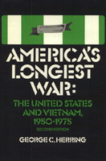

Provides an accurate and objective analysis of the hostilities at home and abroad
Provides an accurate and objective analysis of the hostilities at home and abroad


 Provides an accurate and objective analysis of the hostilities at home and abroad
Provides an accurate and objective analysis of the hostilities at home and abroad

|  |
America's Longest WarThe United States and Vietnam, 1950-1975Second EditionGeorge C. Herringcloth EAN: 978-0-87722-419-8 (ISBN: 0-87722-419-6) |
First published in 1979, America's Longest War has been highly regarded both by scholars and general readers. Extensive and yet manageable, this assessment of our national tragedy provides an accurate and objective analysis of the hostilities at home and abroad.
This second edition provides fuller discussions of domestic opposition to the war and the relationship between the North Vietnamese and the Vietcong. Updated to include information from the Johnson Library and other recently released archives, this comprehensive history extends from the initial U.S. assistance to the French in the Indochina War through the fall of Saigon, the victory of the Kmer Rouge in Cambodia, and the subsequent legacy of our defeat. The revised bibliography makes current all references to recent scholarship.
The new edition of America’s Longest War becomes more timely as we commemorate a decade since the end of the war and attempt to reflect dispassionately on its effects on our national character and policy. In a review of the first edition, Robert L. Beisner (American University) wrote: "Both scholars and those Americans still trying to come to terms with ‘America’s Longest War’ should read this excellent book."
George C. Herring is Professor of History at the University of Kentucky. His other books include Aid to Russia, 1941-1946 (Columbia University Press) and Secret Diplomacy of the Vietnam War (University of Texas Press).
© 2015 Temple University. All Rights Reserved. This page: http://www.temple.edu/tempress/titles/411_reg.html.